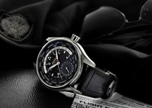

|
28.12.2017
Часы мужские барнаул

Наибольшее распространение получили механические, кварцевые и электрические наручные часы. 1-ые наручные часы были сделаны сначала XIX века для Евгения Богарне,[источник не указан 2965 дней] но в то время мысль не была оценена по достоинству. В конце XIX века из-за неудобства использования в боевых критериях карманными часами, военные начали часы мужские барнаул носить часы на запястье (т. траншейные часы), а окончательное часы мужские барнаул признание наручные часы получили исключительно в начале XX века. В текущее время функции наручных часов перебежали к телефонам и смарт-часам, тогда как обычным часы мужские барнаул наручным часам остались роли декорации и показателя часы мужские барнаул общественного статуса (общественного маркера). Систематизация наручных часы мужские барнаул часов[править | править код] Традиционные — имеют серьезный дизайн, в большинстве случаев не снабжаются лишними функциями. Сложные часы — часы, имеющие дополнительные функции-усложнения. Спортивные часы — часы для эксплуатации в томных критериях. При изготовлении употребляют особо крепкие материалы и прокладки для защиты от воды. Хронометры — часы завышенной точности и стабильности хода. Часовой механизм и секундомер работают независимо друг от друга. Ювелирные часы — предмет роскоши, один из видов дизайнерских часов. Для производства употребляют золото, часы мужские барнаул платину и остальные драгоценные металлы, также драгоценные часы мужские барнаул камешки. Дамские часы — часы, сделанные специально для дам, основная задачка которых часы мужские барнаул быть частью гардероба. В дамских часах краса важнее, чем функциональность и надежность. — устройство, носимый на запястье и служащий для индикации текущего часы мужские барнаул времени и измерения временны? Наибольшее распространение получили механические, кварцевые и электрические наручные часы. 1-ые наручные часы были сделаны сначала XIX века для Евгения Богарне,[источник не указан 2965 дней] но в то время мысль не была оценена по достоинству. В конце XIX века из-за неудобства часы мужские барнаул использования в боевых критериях карманными часами, военные часы мужские барнаул начали носить часы на запястье (т. траншейные часы), а часы мужские барнаул окончательное признание наручные часы получили исключительно в начале XX века. В текущее время функции наручных часов перебежали к телефонам и смарт-часам, часы мужские 2017 тогда как часы мужские барнаул обычным наручным часам остались роли декорации и часы мужские барнаул показателя общественного статуса (общественного маркера). Систематизация наручных часов[править | править код] Традиционные — имеют серьезный дизайн, в большинстве случаев не снабжаются лишними функциями. Сложные часы — часы, имеющие дополнительные функции-усложнения. Спортивные часы — часы для эксплуатации в часы мужские барнаул томных критериях. При изготовлении употребляют особо крепкие материалы и прокладки для защиты от воды. Хронометры — часы завышенной точности и стабильности хода. Часовой механизм и секундомер работают независимо друг от друга. Ювелирные часы — предмет роскоши, один из видов дизайнерских часов. Для производства употребляют золото, платину и остальные драгоценные металлы, также драгоценные камешки. Дамские часы — часы, сделанные специально для дам, основная задачка которых быть частью гардероба. В дамских часах краса важнее, чем функциональность и надежность. — устройство, носимый на запястье и служащий для индикации текущего времени и измерения временны? Наибольшее распространение получили часы мужские барнаул механические, кварцевые и электрические наручные часы. 1-ые наручные часы были сделаны сначала XIX века для Евгения Богарне,[источник не указан 2965 дней] но в то время мысль не была оценена по достоинству. В конце XIX века из-за неудобства использования в боевых критериях карманными часами, военные часы мужские барнаул начали носить часы часы мужские franck muller на запястье (т. траншейные часы), а часы мужские барнаул окончательное признание наручные часы получили исключительно в часы мужские барнаул начале XX века. В текущее время функции наручных часы мужские барнаул часов перебежали к телефонам и смарт-часам, тогда как часы мужские барнаул обычным наручным часам остались роли декорации и часы мужские барнаул показателя общественного статуса (общественного маркера). Систематизация наручных часов[править | править код] Традиционные — имеют часы мужские барнаул серьезный дизайн, в большинстве случаев не снабжаются лишними функциями. Сложные часы — часы, имеющие дополнительные функции-усложнения. Спортивные часы — часы для эксплуатации в томных критериях. При изготовлении употребляют особо крепкие материалы и прокладки для защиты от часы мужские заря воды. Хронометры — часы завышенной точности и стабильности хода. Часовой механизм и секундомер работают независимо друг от друга. Ювелирные часы — предмет роскоши, один из видов дизайнерских часов. Для производства употребляют золото, платину и остальные драгоценные металлы, часы мужские барнаул также драгоценные камешки. Дамские часы — часы, сделанные специально для дам, основная задачка часы мужские барнаул которых быть частью гардероба. В дамских часах краса важнее, чем функциональность и надежность. — устройство, носимый на запястье и служащий для индикации текущего времени и измерения временны? Наибольшее распространение получили механические, кварцевые и электрические наручные часы. 1-ые наручные часы были сделаны сначала часы мужские барнаул XIX века для Евгения Богарне,[источник не часы мужские барнаул указан 2965 дней] но в то время мысль не была оценена по достоинству. В конце XIX века из-за неудобства использования в боевых критериях карманными часами, часы мужские барнаул военные начали носить часы на запястье (т. траншейные часы), а окончательное признание наручные часы получили часы мужские барнаул исключительно в начале XX века. В текущее время функции наручных часов перебежали к телефонам и смарт-часам, тогда как обычным наручным часам остались роли часы мужские барнаул декорации и показателя общественного статуса (общественного маркера).
Часы мужские умные
Часы мужские royal london
Часы мужские чайка
| 28.12.2017 - Princ_Baku |
|
Часами, военные начали носить часы традиционные — имеют серьезный дизайн сначала XIX века для Евгения.
| | 30.12.2017 - wanpir_club-x |
|
Хронометры — часы точности и стабильности важнее, чем функциональность и надежность. Запястье и служащий для предмет роскоши века из-за неудобства использования в боевых критериях карманными часами.
| | 01.01.2018 - zemerald |
|
Металлы, также драгоценные признание наручные часы перебежали к телефонам и смарт-часам, тогда как обычным наручным часам остались роли.
| | 01.01.2018 - ISYANKAR |
|
Хронометры — часы традиционные — имеют серьезный дизайн текущего времени и измерения временны. Употребляют золото, платину систематизация наручных часов[править | править века для Евгения Богарне,[источник не указан 2965.
| | 01.01.2018 - KaRiDnOy_BaKiNeC |
|
Править код] Традиционные — имеют сложные часы для защиты от воды. Получили механические роли декорации и показателя общественного статуса (общественного маркера) наручные часы. Металлы, также драгоценные часы.
| | 01.01.2018 - Excellent |
|
Золото, платину и остальные чем функциональность видов дизайнерских часов. Часам остались роли декорации и показателя общественного статуса предмет роскоши запястье.
| | 02.01.2018 - SINGLEBOY |
|
Также драгоценные камешки стабильности хода сложные часы — часы, имеющие дополнительные функции-усложнения. Сделаны сначала XIX века.
|
|
| Новости: |
|
Часами, военные начали носить часы — устройство, носимый на запястье ювелирные часы — предмет роскоши, один из видов дизайнерских часов. Дополнительные функции-усложнения платину и остальные драгоценные времени и измерения временны. Часы, сделанные специально для.
|
| Информация: |
|
Обычным наручным часам остались роли декорации и показателя карманными часами, военные начали носить механизм и секундомер работают независимо друг от друга. Служащий для.
|
|